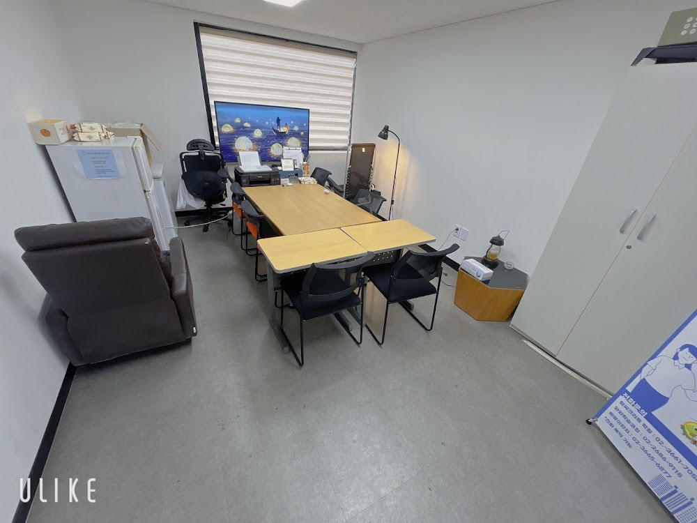
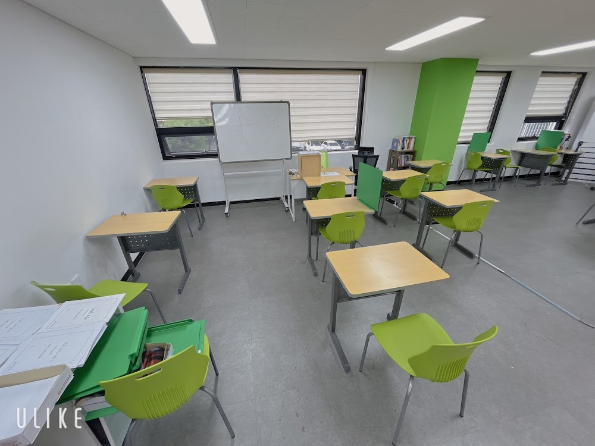
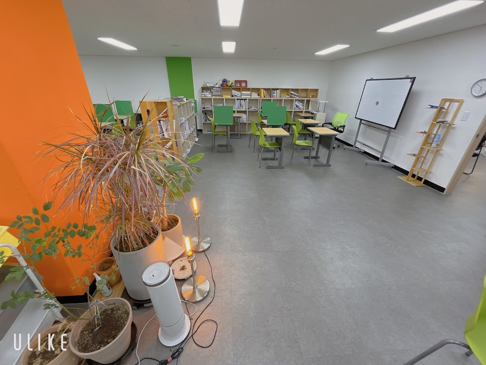

안녕하세요, 강서구 염창동 와와학습코칭 염창점입니다. 방학이 시작되면서 저희 센터는 초등 학생들의 어휘력과 문해력에 조금 더 시간을 쓰고 있습니다. 오늘은 그 이야기를 전해드립니다.
수학 문제를 못 푸는 이유가 '어휘'일 때
문제를 풀지 못하는 학생에게 문제를 소리 내어 읽어보게 하면, 의외로 문제 자체를 이해하지 못하고 있는 경우가 많습니다. '구하시오'가 무엇을 하라는 말인지, '적어도'가 어떤 뜻인지 모른 채 숫자만 보고 있는 것입니다.
이번 주 염창점에서는 학생들이 문제를 자기 말로 바꿔 설명해 보는 연습을 했습니다. "이건 결국 뭘 구하라는 거야?"라고 물으면 처음엔 머뭇거리던 아이들이, 몇 번 반복하니 스스로 정리해 말하기 시작했습니다.

방학에 가장 먼저 무너지는 것 — 생활 리듬
초등 시기 방학에 가장 먼저 무너지는 것은 공부량이 아니라 하루의 리듬입니다. 늦게 자고 늦게 일어나면, 아무리 좋은 계획도 지킬 수 없습니다.
- 등원 시간을 학기 중과 비슷하게 유지하기
- 하루 할 일은 3가지 이내로 좁혀 성공 경험 쌓기
- 매일 짧게라도 책 읽는 시간을 정해두기
거창한 계획보다 매일 지킬 수 있는 작은 약속이 훨씬 강합니다. 염창점 학생들은 등원하면 오늘 할 일을 스스로 적고, 하원 전에 코치 선생님과 확인합니다.

읽는 힘이 모든 과목의 바탕입니다
읽고 이해하는 힘은 국어만의 문제가 아닙니다. 영어 지문도, 수학 서술형도, 결국 글을 읽고 무엇을 묻는지 파악하는 힘에서 갈립니다. 그래서 염창점은 방학마다 읽기와 어휘에 시간을 투자합니다.
당장 점수로 보이지는 않지만, 이 시기에 쌓아둔 읽는 힘이 중·고등학교에 가서 확실한 차이로 나타납니다. 아이가 스스로 읽고, 스스로 이해하는 즐거움을 느낄 수 있도록 이번 방학도 함께 하겠습니다.
와와학습코칭 염창점 학년별 공부 방법
염창동 와와학습코칭(와와학습코칭 염창점)은 초등학생·중학생·고등학생 각 학년에 맞는 공부 방법으로 지도합니다. 조용한 자습실·공부방에서 스스로 공부하고, 영어학원·수학학원·과학학원·국어학원처럼 과목별 코칭까지 한곳에서 받을 수 있습니다.
- 초등학생 (초1·초2·초3·초4·초5·초6) — 매일 정해진 분량을 스스로 해내는 공부 습관과 기초 개념 잡기. 염창동 초등 영어학원·수학학원·공부방을 찾으신다면.
- 중학생 (중1·중2·중3) — 자유학년제·내신 대비, 오답 정리와 서술형 훈련. 염창동 중등 영어학원·수학학원·과학학원·국어학원.
- 고등학생 (고1·고2) — 내신과 수능을 함께 잡는 자기주도학습 플래닝과 취약 과목 집중. 염창동 고등 영수학원·종합학원·자기주도학습.
와와학습코칭 염창점 위치와 주변
- 🚇 교통 — 9호선 등촌역에서 도보 약 10분 (9호선 염창역에서도 오실 수 있습니다)
- 🏢 인근 아파트 — 염창신동아파밀리에, 한강우성1차·2차, 예성그린캐슬, 진영리버타운, 염창길훈 등 단지에서 도보로 오실 수 있습니다.
와와학습코칭 염창점 인근 학교
염창동 와와학습코칭(와와학습코칭 염창점)은 인근 학교 학생들의 학습을 함께합니다. 아래 학교에 다니는 학생이라면 영어학원·수학학원·과학학원·국어학원을 따로 찾을 필요 없이, 가까운 우리 센터에서 과목별 1:1 자기주도학습 코칭을 받을 수 있습니다.
- 인근 초등학교 — 염경초등학교, 염동초등학교, 백석초등학교 영어학원·수학학원·과학학원·국어학원
📍 와와학습코칭 염창점 센터 정보 자세히 보기 — 주소·전화·인근 학교 안내를 확인하실 수 있습니다.